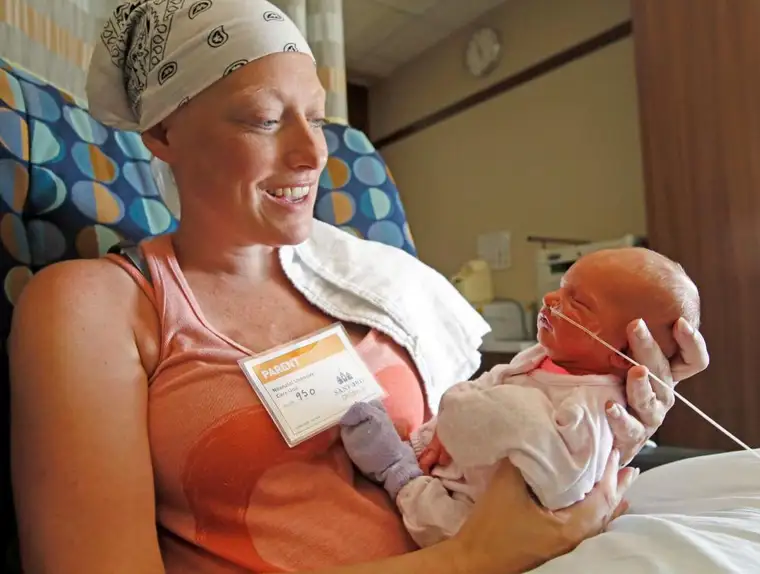

FARGO — Like many parents, Merideth Sorenson and her husband, Troy, began thinking of names for their youngest child well before the due date.
“We really didn’t have any good boy names picked out,” Sorenson says, despite not knowing the gender.
But the girl name she favored ended up shelved — along with other plans — when, in April, pains Sorenson had been experiencing in her stomach became unbearable.
Initially thought to be pregnancy-related, the discomfort, tests and surgery revealed the unfathomable: She was growing both a baby and a tumor — a rare, aggressive, non-Hodgkin lymphoma — near her small bowel, which had ripped open her intestine.
“They weren’t going to tell me until the next day, when I was fully awake and aware,” Sorenson says. Four hours after the surgery began, she awoke to “everyone in tears and crying.”
Sorenson’s father, Michael Ludwig, says the news shocked everyone.
“How can a child of yours, 35, have cancer, and nobody ever noticed?” he says. “This came on so suddenly; it kind of floored us all.”
But Ludwig says he has watched with admiration his daughter’s courageous handling of the situation.
“She was in a lot of pain, but she carried it well,” he says. “She did things I don’t think a lot of people could probably do, having a family to take care of and being a mother of other children, too.”
“You hear of someone being pregnant with cancer,” Troy says, “and you think, ‘No way … no
way in heck.'”
Immediately after the surgery, he says, a physician cautioned him that some “tough decisions” would have to be made between keeping either mother or baby alive. “I thought, no, that’s crazy.”
‘A very strong lady’
A website of other mothers who’d experienced cancer while pregnant, www.hopefortwo.org/, gave Troy hope.
The Sanford medical staff soon began assembling a team of doctors who, according to Ludwig, conferred with oncologists with Mayo Clinic in Rochester, Minn.
A cesarean section was planned for late August, in advance of the early September due date. But during a “diaper party” at the family’s home on July 17, Sorenson’s water broke — and, seven weeks early, Hope Elaine was born, weighing 4 pounds, 8 ounces and measuring 18 inches long.
Though the word “miracle” enters birthing rooms often, this family seems to feel it more deeply given the circumstances, gazing in awe of their new “peanut,” who, thriving, seems unaffected by the stress her mother has faced.
According to her maternal grandpa, she’s about perfect.
“You don’t think, at our age, of having a final granddaughter being so soft and tender,” says Ludwig. “The love she has brought out in everybody, and all the things people have done for Merideth, has been overwhelming.”
The name “Hope” came to Sorenson after her diagnosis, when a friend shared a video featuring another healthy birth that beat the odds. “I just knew then it had to be Hope.”
With Hope safely in the world, and after the discovery of another suspicious spot during delivery, plans began to start a more aggressive round of chemotherapy, which meant separating mother and child at different hospitals.
Though Sorenson didn’t like being away from her tiny daughter, Ludwig says, her bravery remained.
“She’s decided to fight this with everything she’s got,” he says. “She’s been a very strong lady, wanting to take care of her family. They’re the most important thing to her.”
It’s not the first major trial Sorenson has encountered. Her mother, Roxanne Ludwig, 66, was diagnosed with early-onset dementia at 55. Sorenson says her father retired early to care for her.
“He’s an amazing man and he does such a good job with my mom,” Sorenson says. “She definitely knows who her husband is.”
Though Sorenson wishes her mother didn’t have to suffer this disease, she says she seeks small victories — like when her mom held Hope soon after her birth.
“I heard her say, ‘Little baby,'” she says, smiling.
Her parents’ journey, she adds, has taught her unconditional love, patience and trust.
“We’re really not in control of anything, so you just have to hand it off to God, and let him do his job,” Sorenson says. “I definitely have my moments of doubt, but I can’t let that overcome me and bring me down.”
Mostly, she just wants to get healthy for Hope, Troy and their other children, Dominic, 16, Abrianna, 8, and Hunter, 6.
“Even my little guy, he wanted a brother but he’s in love with her,” Sorenson says of how Hope has brought hope to everyone.
Troy, who had settled on Hunter being their last child, says his wife persuaded him to have another, and he’s grateful.
“(Hope) has definitely been a blessing through all of this, and what a story she’ll have to tell someday,” he says, noting that his wife thanks him every day for the gift.
“She’s way more worried about the kids than herself.”
“I don’t want (my kids) to see me sad all the time, so I just try to live my life like there’s nothing going on,” Sorenson says, noting again that her faith brings strength.
If Sorenson could offer anything to others from her experience, it’s that “there’s always hope. There’s so much hope. And she’s a spitting image of what hope is,” she says, gazing down at her daughter. “Aren’t you, baby girl?”
[For the sake of having a repository for my newspaper columns and articles, I reprint them here, with permission, a week after their run date. The preceding ran in The Forum newspaper on Aug. 11, 2018.]